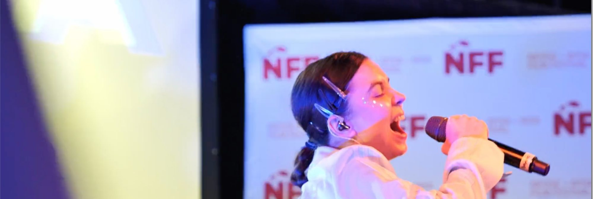
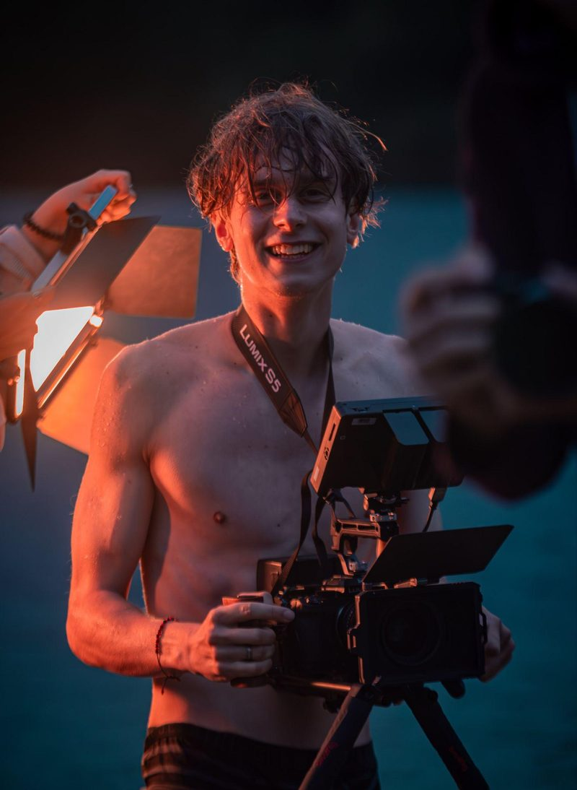
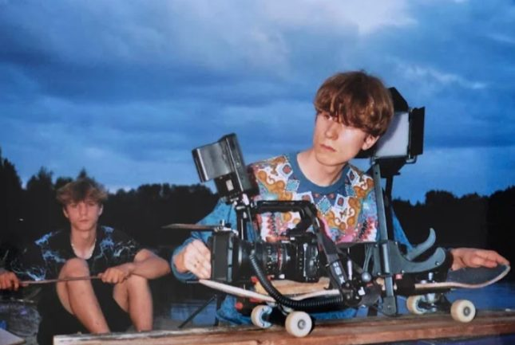
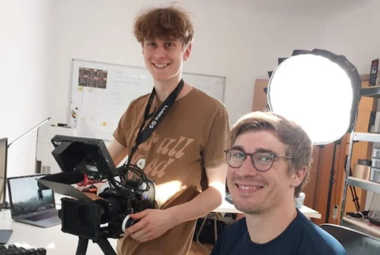
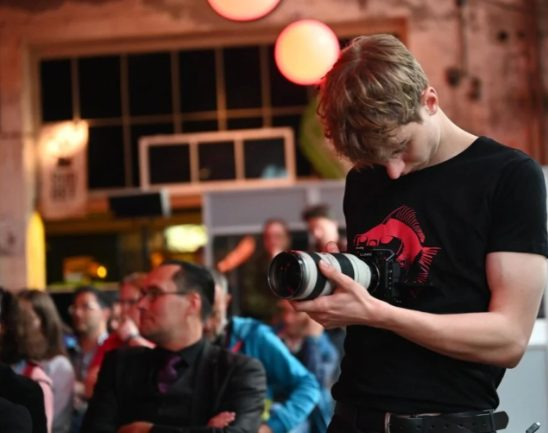
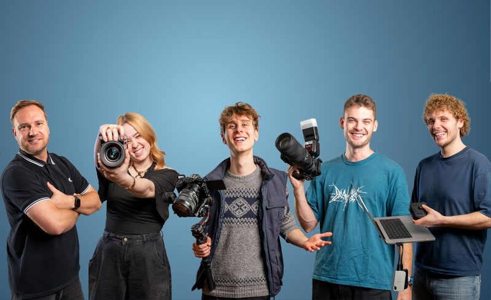

Till Börner
Gründer
[Kurzvorstellung Till: 2 bis 3 Sätze, persönlich und konkret]

Videoproduktion aus Dresden für Unternehmen, die mit Videos Kunden und Mitarbeiter gewinnen wollen.
Unternehmen, die bereits auf bessere Videos setzen
„Ich würde es immer wieder gerne machen.“ (nach 5 Videos mit uns)
Manuela ThomasGeschäftsführerin, SozialNetzwerk Lausitz„Wir haben sehr gute Erfahrungen mit Tills Arbeit gemacht. Er ist nicht nur kreativ, sondern produziert immer zielgerichtet und ergebnisorientiert.“
Vincent S.auf Google„Super Filme! Toll geschnitten und unsere Vorstellungen umgesetzt. Kann ich nur empfehlen!“
Christoph Bieleauf Google„Till und sein Kollege Konrad waren im Sommer 2025 bei uns in der Pflegeschule für ein eintägiges Shooting für eine Stellenausschreibung.“
Christoph G.auf Google
„Ihr Video muss fesseln, Vertrauen aufbauen und emotional überzeugen!“
Till BörnerGründer von betterVIDEOS
So könnte Ihre Videoproduktion aussehen
Vier Schritte, klar geplant. Sie wissen immer, was als Nächstes passiert.
Termin sichernIm kostenlosen Kick-off-Call klären wir, was Ihr Video erreichen soll und wen es erreichen muss.
Medienstrategie, Storyline und Drehplan, passend zu Ziel, Zielgruppe und Budget. Sie wissen vorher genau, was gedreht wird.
Dreh vor Ort mit einem kleinen, eingespielten Team, danach Schnitt, Farbe und Sound. Auf Wunsch mit Express-Lieferung.
Wir helfen, Ihr Video dort zu platzieren, wo Ihre Zielgruppe ist. Auf Wunsch inklusive Anzeigenschaltung.



Gründer
[Kurzvorstellung Till: 2 bis 3 Sätze, persönlich und konkret]
[Rolle eintragen]
[Kurzvorstellung Maurice: 2 bis 3 Sätze, persönlich und konkret]
Hier gibt's Antworten.
Für alle, die mit Videos ein konkretes Ziel erreichen wollen: neue Kunden gewinnen, gute Mitarbeiter finden oder einem Event mehr Wirkung verschaffen. Wir arbeiten für Unternehmen, Vereine, Stiftungen, Institutionen und die Politik.
Unser Studio ist in Dresden. Wir drehen in ganz Sachsen und der Lausitz, auf Anfrage auch darüber hinaus.
Imagefilme, Social Media Marketing, Werbeanzeigen, Kundenstimmen und Erklärvideos. Dazu Recruitingvideos, Social Recruiting und Employer Branding sowie Veranstaltungsvideos, Eventfotos, Aftermovies und das SocialSpeed-Paket mit Posts noch am selben Tag.
betterVIDEOS ist eine Videoproduktion aus Dresden, gegründet von Till Börner. Wir sind ein kleines, festes Team. Wer mit Ihnen spricht, steht auch am Set und sitzt im Schnitt. Mehr über uns.
Das hängt vor allem von der Zahl der Videos, den Drehtagen und dem Aufwand im Schnitt ab. Im kostenlosen Konzeptgespräch klären wir, was Sie wirklich brauchen, und Sie bekommen ein transparentes Angebot. [Optional: Preisrahmen „ab … €“ ergänzen]
[Preisrahmen eintragen, z. B. „ab … € netto“] Der genaue Preis hängt von Länge, Drehorten und Anzahl der Drehtage ab.
[Preisrahmen eintragen] Für Events gibt es feste Pakete von Starter bis Premium. Mehr dazu unter Eventvideos.
[Preisrahmen eintragen] Meist lohnt sich eine Kampagne aus mehreren kurzen Videos statt eines einzelnen Films. Mehr dazu unter Recruiting.
Dort, wo Ihre Zielgruppe ohnehin unterwegs ist: auf Social Media, als Werbeanzeige, auf Ihrer Website, in Präsentationen und im Vertrieb. Wir planen die Verbreitung von Anfang an mit und unterstützen auf Wunsch bei der Anzeigenschaltung.
Überlegen Sie vorab drei Dinge: Was soll das Video erreichen? Wen soll es erreichen? Wo soll es laufen? Alles Weitere erarbeiten wir gemeinsam im Kick-off.
Weniger, als Sie denken. Der Kick-off-Call dauert 20 bis 60 Minuten, dazu kommen eine kurze Abstimmung zum Konzept, der Drehtag und eine Feedbackrunde zum Schnitt. Die Organisation übernehmen wir.
Kostenlos, unverbindlich und mit frischen Marketing-Ideen für Ihr Business.
Wir sprechen über Ihr Unternehmen, Ihre Ziele und Ihre Zielgruppe. Im besten Fall gehen wir mit einem Plan raus, im schlimmsten Fall mit einem Bündel neuer Ideen.
